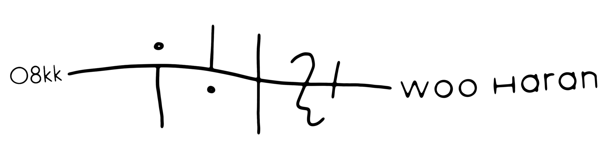

Woo Haran (b. 2000, South Korea) is a composer and multidisciplinary artist based in Suwon, South Korea. Woo's creative works unfold within [O8kk], a poetic cosmology—where Moon [O], Clouds [8], and Stars [kk] form an ever-evolving network. In this conceptual universe, Woo explores what can be described as Plural Oneness(다일성;多一性)—a state where singularity and plurality coexist in continuous transformation.
Woo holds BFA in music composition from the California Institute of the Arts (CalArts) under mentors Michael Pisaro, Ulrich Krieger, and Karen Tanaka, developing a multidisciplinary approach that bridges sound, image, and performance.
In 2024, Woo received the Special Prize at the Arte Laguna Prize in Venice, Italy for 윤슬 (Ever-Changing), a video work that explores the fluid relationship between nature and digital structure. In 2026, Woo participated in an artist residency at Zit-Dim Art Space, Tainan, Taiwan, through the Taiwan Art Space Alliance (TASA). The residency concluded with his first solo exhibition You hear something. I know you do., a multimedia installation featuring the sound-based project 오슬 (Ever-Passing) and the composition Evocator.
Woo's works have been presented at experimental and digital art platforms including Radiophrenia Glasgow, the London Experimental Film Festival, Athens Digital Arts Festival, Music For Your Inbox in Los Angeles, GUI/GOOEY in New York City.
In 2021, in prior to the development of [O8kk], Woo was named National Second Winner by the Music Teachers’ National Association (MTNA) in the United States for Fantasy Variations: on an original tune in the character of Korean folk music, a solo piano composition that reimagined the traditional theme-and-variations form through an original narrative about a child and two butterflies.